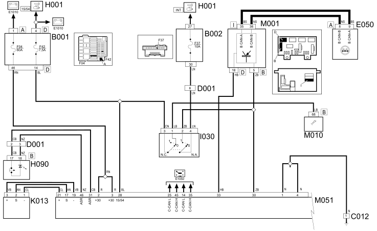
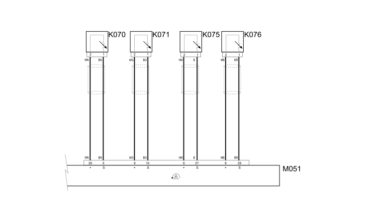

E7024 WIRING DIAGRAM
- Path
- Electrical equipment > 1 ELECTRICAL FUNCTIONS > E70 VEHICLE ELECTRONIC SYSTEMS > E7024 ELD > E7024 WIRING DIAGRAM
- Kind
- topic
- Applies to
- engines: 1.3 JTD 16v; all production periods; only with equipment: SUV
- Interactive page
- https://sloeber94.github.io/elrnDB-fPnd/en/#/169002472
Applies to: engines: 1.3 JTD 16v; all production periods; only with equipment: SUV
Wiring diagram


COMPONENTS
Component code | Description | Reference to the assembly |
|---|---|---|
engine compartment junction unit | ||
Junction unit under dashboard | ||
front/dashboard coupling | - | |
Instrument panel | ||
Ignition switch | ||
Switch control panel | ||
Brake pedal switch | ||
Longitudinal acceleration sensor | - | |
Left front sensor for ABS | ||
Right front sensor for ABS | 3340A | |
Slewing sensor (VDC) | 3340A | |
Left rear wheel sensor for ABS | ||
Right rear wheel sensor for ABS | ||
Body computer | ||
Engine management control unit | ||
Braking system control unit | - |
Topics linked from this page (24)
- 1060G pressure pump electric control
- 3340A abs check/adjustment devices
- 5505A multi-function components
- 5505C vehicle compartment wiring
- 5520A ignition switch
- 5550D BRAKE AND REVERSING LIGHTS
- 5560B analogue control panel
- 7040A passenger compartment trim
- E50 ENGINE CONTROL AND MANAGEMENT SYSTEMS
- B001 JUNCTION UNIT
- B002 JUNCTION UNIT UNDER DASHBOARD
- D001 FRONT/DASHBOARD COUPLING
- H001 IGNITION SWITCH
- H090 SWITCH CONTROL PANEL
- I030 BRAKE PEDAL SWITCH
- K013 LONGITUDINAL ACCELERATION SENSOR
- K070 LEFT FRONT WHEEL SENSOR FOR ABS
- K071 RIGHT FRONT WHEEL SENSOR FOR ABS
- K074 SLEWING SENSOR (VDC)
- K075 LEFT REAR WHEEL SENSOR FOR ABS
- K076 RIGHT REAR WHEEL SENSOR FOR ABS
- M001 BODY COMPUTER
- M010 ENGINE MANAGEMENT ECU
- M051 Braking system control unit